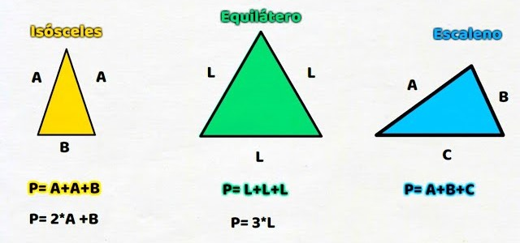

Triángulo
Para calcular el perímetro de un triángulo debe sumar la longitud de sus tres lados.
Formula:

Perímetro de figuras planas
Matemáticas
Para calcular el perímetro de un triángulo debe sumar la longitud de sus tres lados.
Formula:
